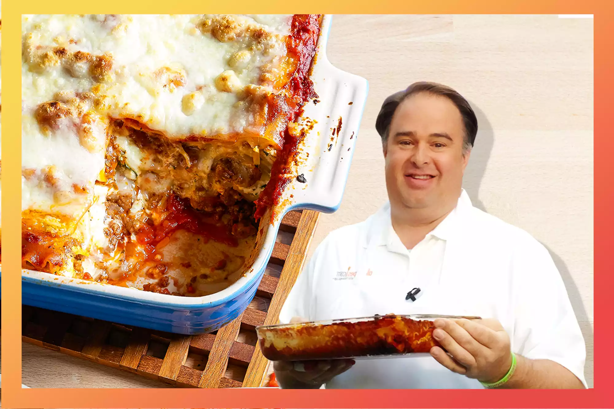

Lasagna

Remembering 'The Lasagna Guy,' Creator of the Internet's #1 Lasagna Recipe
John Chandler submitted one of our most popular recipes, World’s Best Lasagna, in 2001. He passed away unexpectedly this year at age 53 — read what his loved ones have to say about his life, legacy, and lasagna. Plus, learn how you can support his family as they grieve.
John Chandler was a lot of things to a lot of people. He was a doting father, a loving husband, a caring friend, and a gifted salesman. But you might know him as the inventor of the World's Best Lasagna.
That title isn't hyperbole: One of our top-performing recipes of all time, it racks up more than 7 million views per year. It has ranked among the most popular lasagna recipes on the internet for two decades.
At the time of publishing, it's the highest ranking and most reviewed lasagna recipe on the entire internet.
Passos
- Preheat oven to 350 degrees F (175 degrees C). Grease a 9x13-inch casserole dish.
Passo 2
- Heat a large skillet over medium-high heat and stir in ground beef. Cook and stir until beef is crumbly, evenly browned, and no longer pink, about 10 minutes. Drain and discard any excess grease. Add water and taco seasoning; cook and stir until mixture has thickened, 5 to 10 minutes.
Passo 3
- Arrange 3 tortillas in the bottom of the casserole dish; spread about half the can of refried beans and half the ground beef atop the tortilla layer. Sprinkle 1 cup Colby-Jack cheese over ground beef layer. Arrange 3 more tortillas over the cheese. Spread in the remaining 1/2 can refried beans and half the jar of taco sauce; sprinkle with 1 cup Colby-Jack cheese. Arrange 3 more tortillas and top with remaining ground beef and 1 cup Colby-Jack cheese. Top with last 3 tortillas and remaining 1/2 jar taco sauce.
Passo 4
- Preheat oven to 350 degrees F (175 degrees C). Grease a 9x13-inch casserole dish.
Passo 5
- Preheat oven to 350 degrees F (175 degrees C). Grease a 9x13-inch casserole dish.
Passo 6
- Preheat oven to 350 degrees F (175 degrees C). Grease a 9x13-inch casserole dish.
Passo 2
- Preheat oven to 350 degrees F (175 degrees C). Grease a 9x13-inch casserole dish.